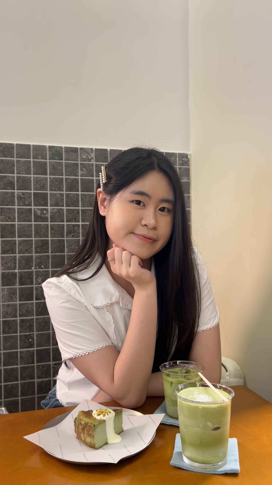

初見伊晴是在動態度和 ec.rise 聯合主辦的「聯合出擊 · 第十八式」的舞臺上。扎實的演唱功力和幽默風趣的談吐給我留下了很深刻的印象，當下便暗下決心一定要和大家推薦這位寶藏女孩。而後發現原來我也曾在網路上留意過她的歌聲，留韓學習音樂的經歷更是讓我對她愈發好奇！所以本期主編直接采訪本人！和伊晴聊聊她的音樂歷程還有關於「追男孩子這件事」。
捱過首爾寒冬，“現在沒任何事情會比那時候更糟糕”
在進入漢陽大學實用音樂系之前，伊晴是個實打實的音樂門外漢。原打算申請戲劇系的她在語學堂老師的提點下轉向了實用音樂系，至此踏上了她的音樂之路。韓國成熟的培訓體制將伊晴磨練成了一位技巧成熟、台風穩健的唱將。非黑即白的評判標準，讓初來乍到的她也曾拷問「為什麼一定要這樣！？」卻也在時間的洪流中潛移默化地創作出了「沒有靈魂的音樂」。
在自由的土地上重新生長
求學期間在台灣短暫交換的經歷，反而讓伊晴的創作重新長出血肉。在寶島邂逅了靈感繆斯的她，前後寫下四首創作，記錄了這場如夏夜煙火般絢爛的單戀，我將其稱為「暈船四部曲」。
悸動萌芽時青澀唯美的〈月光啊請你幫我轉達〉；
到直率坦白的〈我的喜歡不想轉彎〉；
再到心事落幕的〈關於追男孩子這回事〉；
最後〈輕輕〉離開，敘事完整，起承轉合。
剛開始寫歌的伊晴仍保留中文創作遣詞理應優美的迷思，因而把情愫寄託在「月光」諸類唯美的意象上。〈月光啊請你幫我轉達〉觀感好似在初識時，在喜歡的人面前有些青澀，努力保持矜持的姿態。
都說親密關係像一面鏡子，本性活潑直率的她也在追逐愛情的過程中認清了自己的模樣。之後便果斷摒棄了華麗的辭藻，用最貼近伊晴的口吻寫下〈我的喜歡不想轉彎〉直球表達自己的情感。更是用「什麼太陽 什麼月亮 我才不管 我就問你到底要不要跟我」調侃了過去的自己。
把「不轉彎」這件事貫徹到底的伊晴也在〈關於追男孩子這回事〉完成的當下發給對方藉機表白。怎料卻收到對方「我覺得這個編曲的感覺不對」「你的鋼琴不應該這樣排」等上文不接下文的回復。明瞭對方心意的伊晴將所有關於遺憾還有放手的情緒濃縮在〈輕輕〉裏，將這段過往輕輕吟唱。

伊晴推薦
現代的都市男女不斷地在尋找愛和害怕受傷害中徘徊，進而推演出了一套「戀愛心機」來武裝自己，但在茫茫人海裏能夠遇到喜歡的人本就是很珍貴的事。那為何我們不能放下成見坦誠地去愛呢！希望大家都可以在不給對方困擾的情況下，坦蕩大方表達喜歡！表達愛！
慧緣推薦
月亮不會奔你而來
但我願跨洋過海 翻山越嶺 不遠萬里 陪你
喜歡一個人於我而言像是把一部分的自己交出去進行交換的過程，沾染上對方的氣質、開始擁有新的意識、接觸新的事物。在追逐愛的過程中變得勇敢、鮮活也當然會有敏感和脆弱，但每個交換得來的碎片都拼湊出了更完整的我。
<結>
欣賞伊晴不僅僅是喜歡她在聚光燈下情感細膩的演唱，更是欣賞她對一切事物懷抱赤誠之心的人格魅力。在她身上總能感受到一股很純粹的能量，笑盈盈地面對一切困難然後幽默地變成她的創作靈感。談及未來的創作方向，伊晴反而一改主動的作風，表示希望自己能夠先將自己的彈藥庫蓄滿再出擊。期待伊晴未來大放異彩！